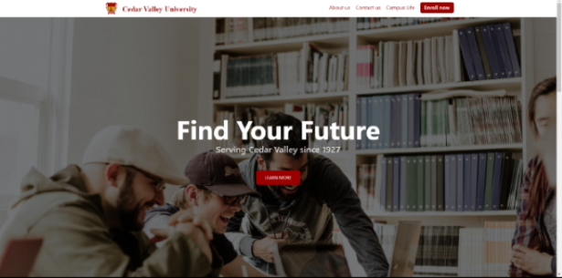

About Me
Where I'm From
I grew up in Lockport, Manitoba, before moving to Winnipeg when I was older. The move marked a turning point in my life, offering new opportunities for growth and learning. In Winnipeg, I pursued my education and began focusing more on my passion for software development, embracing the challenges and experiences the city had to offer.
Languages I Know
I have a solid foundation in web development, with expertise in HTML, CSS, and JavaScript to create dynamic, user-friendly websites. I'm also proficient in React, allowing me to build modern, responsive web applications. Additionally, my experience with C# gives me the ability to work on backend development and software projects, making me a well-rounded developer ready to tackle a range of challenges.
Skills
My greatest strengths are being a lifelong learner and a dedicated hard worker. I thrive on challenges, always looking for opportunities to push my skills and grow. Whether it's mastering a new technology or solving complex problems, I'm driven by the excitement of learning something new and overcoming obstacles along the way.
Education
I graduated from Oak Park High School in June 2024 with cum laude honors, and I have since completed my studies at MITT in software development. My education has equipped me with a solid foundation in programming, web development, and problem-solving, preparing me to take on real-world challenges in the tech industry.
My Projects
Cedar Valley University
I created the Cedar Valley University website as a project, and it's a completely fictional university. The website showcases a clean, professional layout designed to simulate a real academic institution, featuring fake programs, campus life details, and resources for students. This project helped me practice web development skills like HTML, CSS, and JavaScript, allowing me to build a fully functional, visually appealing site as part of my software development studies.
Open NowClient Detection

The "Client Detection" website I created demonstrates how to gather and display information about a user's system. It uses JavaScript to detect details like the operating system, browser, screen dimensions, battery level, and network status. This project helped me practice using JavaScript to interact with a user's environment and provide real-time data. It's a functional tool that showcases my skills in web development and client-side scripting.
Open NowTemperature Converter

The "Temperature Converter" website I built allows users to convert temperatures between Celsius and Fahrenheit. It features a simple, user-friendly interface and includes a dark mode option for better accessibility. This project helped me practice HTML, CSS, and JavaScript to create a functional tool that showcases my web development abilities.
Open Now